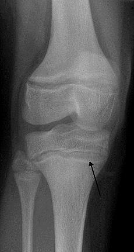
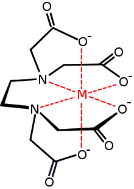

Aici putem observa o radiografie ce ne indică prezenţa saturnismului.

Plumbul este un metal toxic pentru organismul uman. Acesta determină diferite boli, printre care se numară şi saturnismul.
|
Este un tip de intoxicaţie şi o afecţiune în organism a vertebrelor, fiind provocat de mărirea nivelului de plumb din corp. Plumbul intervine în diferite procese ale organismului şi este nociv pentru multe organe şi ţesuturi. |
|
Aici putem observa o radiografie ce ne indică prezenţa saturnismului. |
 |
În majoritatea cazurilor, pentru a preveni saturnismul, soluţia este evitarea expunerii la plumb. Screening-ul este o metodă importantă în strategiile de medicină preventivă. Există programe de screening pentru testarea sângelui copiilor cu risc ridicat de expunere la plumb, cum ar fi cei care locuiesc în apropierea spaţiilor înconjurate de plumb. Există în farmacii truse de testare pentru această boală. Aceste tampoane, în contactul cu plumbul, devin roşii.
•Cum se tratează saturnismul?Pilonii de tratament sunt îndepărtarea de la sursa a plumbului sau tratament chelator pentru persoanele care au nivelul de plumb din sânge semnificativ ridicat sau care au simptome de intoxicaţie. Tratamentul pentru deficienţe de fier, calciu şi zinc este asociat cu mărirea absorbţiei de plumb, care este o altă parte a tratamentului pentru saturnism. |

|